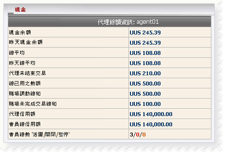

余額
定義:
這是總報告，幫助代理商以及與他/她目前余額輸贏數額，支付或收取數額.

余額
用詞註解:
- 現金余額: 目前總代理輸贏金額，包括轉帳交易
- 昨天現金余額 : 總代理輸贏數額至昨日
- 總余額 : 總代理輸贏數額至昨日
- 昨天總余額 :總支付或收取的總金額，代理需要解決與上線至昨日
- 代理未結束交易 ：總代理的會員金額從他/她的占成正在進行/等待注單
- 未完成交易總數 ：總會員金額正在進行/ 等待注單。
- 總娛樂城轉帳 : 總額轉移體育博彩至 娛樂場通過會員。
- 總娛樂場未完成交易 : 總會員金額對未完成娛樂游戲.
- 代理信用額 : 金額給予代理通過上線
- 會員總信用額:總金額給予會員
- 會員總數 “活躍/ 關閉/ 暫停“: 會員數目是"活躍/ 關閉/ 暫停“
如何理解報告
- 現金余額 = 245.39 是指目前代理贏 245.39
- 昨天現金余額 = 245.39 是指至昨日代理贏 245.39
- 總余額 = 108.08 指代理將收到上線的 108.08
- 昨天總余額 = 108.08 是指昨日代理將收上線 108.08
- 代理未結束交易 = 210 是指代理可能會收到的最大 210 從全部進行/ 等待注單
- 未完成交易總數 = 500 是指目前總會員金額在進行/等待注單是 500
- 總娛樂城轉帳 = 500 是指會員轉帳從體育博彩至娛樂城 500 總額
- 總娛樂場未完成交易 = 100 是指會員留100在未完成娛樂游戲
- 代理信用額 = 140,000 是指最初代理給予 140,000 通過上線
- 會員總信用額 = 140,000 是指代理總額給予所有會員
- 會員總數 “活躍/ 關閉/ 暫停“ = 3/0/0 是指代理有3 活躍/ 0 關閉 / 0 關閉的 會員 .